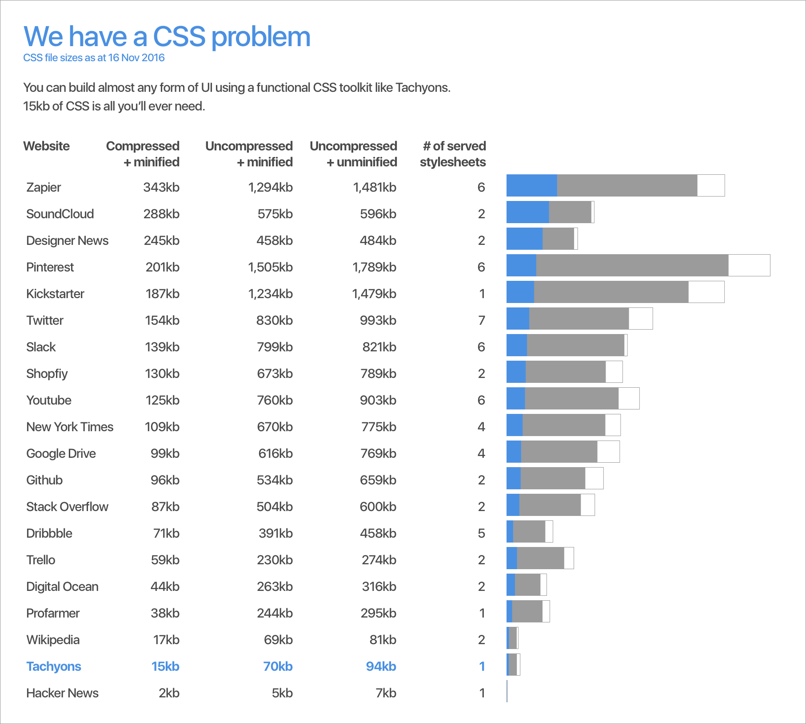

With the danger of having lured you with a click-baity title I'm going to further test your patience by talking about functional CSS. This seems to be a topic with polarising opinions.
I have found two overall benefits when using functional CSS:
- Much smaller CSS file sizes (faster load time üêé = happier users). This is what this post is about.
- Much faster UI development in the browser üíª (working faster = happy co-workers and happy boss). I want to do a separate post for this soon.
I've used functional CSS for a few months and have found it to be most enjoyable. It feels like direct manipulation in the browser which is pretty cool. For this post however I won't be talking about how functional CSS has improved my workflow, instead I'll talk about the benefit it brings to performance:
You can build any UI with 15kb of CSS? Are you sure about that? ü§î
Yup. Classes in functional CSS have a single purpose or responsibility. This makes them infinitely re-useable. Unlike the following class:
.card {
display: block;
border: 1px solid #999;
padding: 1.5rem;
margin-bottom: 1rem;
}which can only be re-used once. Think of how many times you can re-use the following class:
.tc {
text-align: center;
}The semantic class name approach to writing CSS leads to the constant need for new CSS. You'll never stop writing CSS. On the other hand, the functional CSS approach means you will write all the CSS you need, and then you will stop. If you are clever about it, it won't be much larger than 15kb. Ideally you are the designer and it matches your design/pattern library. If not, then you are a developer and you work closely with the designer to define all the CSS classes.
The reason I say that: CSS is design. The things that get declared in CSS almost all relate to the user interface in some way:
- Typography
- A grid system (if you use one)
- Colours
- Margins and paddings
- etc...
CSS is the dictionary of your design library.
Perhaps the fact they are called CSS classes has led us down the wrong path. A CSS class has little resemblance to the classes of OOP languages. I recently heard someone say that you don't class an element, you style it. I'm going to run with that.
CSS is simple.
CSS is responsible for making something blue. Or making some text big. Or making every second element have a light grey background. Or making a block of text hide on small screen sizes. It's quite simple, let's not over complicate it.
"O.K. Philip" I hear you say, "that makes sense. But why the fuss over 300kb of CSS? How is that a big deal?" ü§î
But it is.
It takes ten seconds üê¢ to load 300kb of CSS on a 3G connection. It takes two seconds on a 4G connection. That's just the CSS, not the content/scripts/images/fonts etc. Many of us, especially in tech, are blessed with fast internet speeds (‚ù§Ô∏è fibre internet). Before deeming your web app fast, try loading it with the standard 3G throttle in Chrome Dev Tools. Really, give it a shot. Performance is a feature. CSS no longer gets a free pass.
There is the bigger issue of CSS in web development (which is another post in itself). It shouldn't take a day to change a piece of UI because the CSS is a nightmare to work with. From my experience over the last few months functional CSS gets around this.
User first.
We are all building products for users. If our clever Sass or Less spits out a CSS file that is over 300kb after minification and compression then we've over complicated things and we're making our users suffer.
Give it a go. üñ•
Your users will have a better experience and I daresay when you try it, you'll have a better experience working with CSS. It's a big shift mentally, but it's only when you start to use it that you see how easy it is to work with.
Further reading:
CSS and Scalability by Adam Morse
Building and shipping functional CSS by Cole Peters
Functional CSS toolkits:
(functional CSS libraries/toolkits have similar structures so most of it comes down to class naming and how much CSS is included. I prefer Tachyons in this instance but you can extend/augment them based on your needs which is what makes them so great!)
Thanks to Grant and Adam for feedback and Kira for encouragement üòä ‚úçÔ∏è